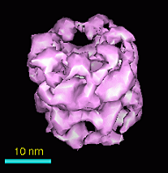
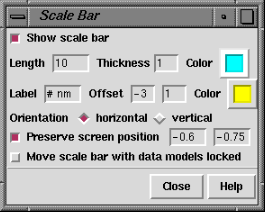

|  |
|  |
There are several ways to start Scale Bar, a tool in the Higher-Order Structure category. Starting Scale Bar brings up a dialog for creating the scale bar.
Turning Show scale bar on creates and displays a bar according to the existing settings; turning it off deletes the bar. Deleting and re-creating the scale bar frequently resolves problems such as disappearance of the bar or label. The bar is a cylinder that exists in three dimensions.
Typed-in settings will not be applied until the Enter (return) key has been pressed. Length and Thickness are expressed in the current display units. The bar and label Color settings can be changed by clicking the respective color wells. The Label text is as shown in the adjacent field except that the Length value is substituted for every occurrence of the pound sign # (zero, one, or multiple times). The label Offset is the position of the bottom left corner of the label relative to the middle of the bar edge, in the current display units. Bar Orientation may be horizontal or vertical. When the bar is horizontal, the label Offset is relative to the top of the bar; increases in the two values move the label rightward and upward, respectively. When the bar is vertical, the label Offset is relative to the right side of the bar; increases in the two values move the label downward and rightward, respectively.
The Preserve screen position fields describe the horizontal and vertical positions, respectively, of the center of the bar within the graphics window. The horizontal value ranges from -1 to 1 going from left to right and the vertical value ranges from -1 to 1 going from bottom to top. Preserve screen position keeps the bar center at the indicated position when the view is scaled (of course, the bar is still scaled). When Preserve screen position is off, the bar can drop out of view when the view is scaled up.
When the bar is created with Show scale bar, or when one of the Orientation settings is chosen, the bar is made parallel to the XY plane (the plane of the screen). The ends of the bar have the same Z coordinate, where Z is the dimension perpendicular to the screen. When created with Show scale bar, the bar is placed halfway between the near and far clipping planes (these can be viewed and moved in the Side View).
When Move scale bar... is off, the data models are activated for motion and the scale bar is deactivated. Turning Move scale bar... on reverses these settings, so that the bar can be translated and rotated with the mouse while the other models remain fixed. After a scale bar has been moved around, its ends can have different Z coordinates (one end of the bar can be closer than the other), which is usually not desired. Clicking one of the Orientation settings is an easy way to bring the bar back parallel to the plane of the screen.
Two additional issues relate to the existence of the scale bar in three dimensions:
The scale bar is implemented as a molecule model containing one residue, three atoms (two ends of the bar and one for label positioning), and one bond (connecting the end atoms). Thus, any actions or commands that affect the display of atoms and bonds can also alter the appearance of the scale bar. When the data models contain atomic coordinates (that is, when they are also molecule models), it may be best to adjust their appearance as desired for the final image before creating the scale bar.
Turning Show scale bar off and then back on will cure many ills. This actually deletes the scale bar (closes the scale bar model) and creates a new one in accordance with the settings in the Scale Bar dialog. When the scale bar is created, it is opened as the lowest available model number. The end atoms are undisplayed and the bond between them is represented as a stick (cylinder). Only one scale bar can exist at a time.
Label font and size cannot be controlled separately from those of
atom labels.
The font type and size of scale bar labels can only be changed
along with other atom/residue labels in the
Background
preferences. However, labels of independently controllable size
can be created using 2D Labels
instead.
Label text can turn out smaller in printed and saved images.
Label text is restricted to a certein height in pixels.
When an image is saved or printed at a different resolution than the current
screen display, the size of the label relative to the rest of the image
will be different than it is in the display.
Higher resolution of the saved or printed image corresponds to a smaller
relative label size.
The label atom is sometimes visible.
As mentioned above, the scale bar is implemented as a molecule,
with one of its atoms defining the location of the label.
The label atom must remain displayed for the label to be displayed.
When the scale bar is created, the label atom is colored to match
the current background. If the background color is subsequently
changed (see the
Background Preferences),
the label atom may be visible against the new background.
Deleting and re-creating the scale bar with Show scale bar
solves this problem by making the label atom match the new background color.